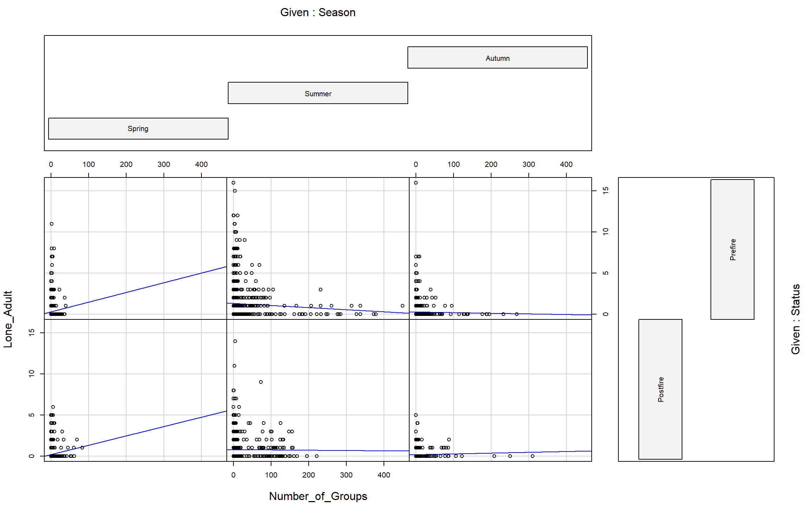
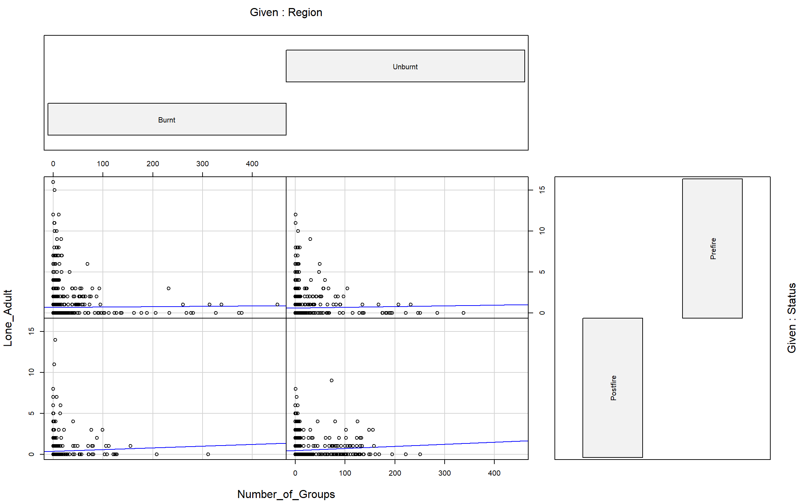
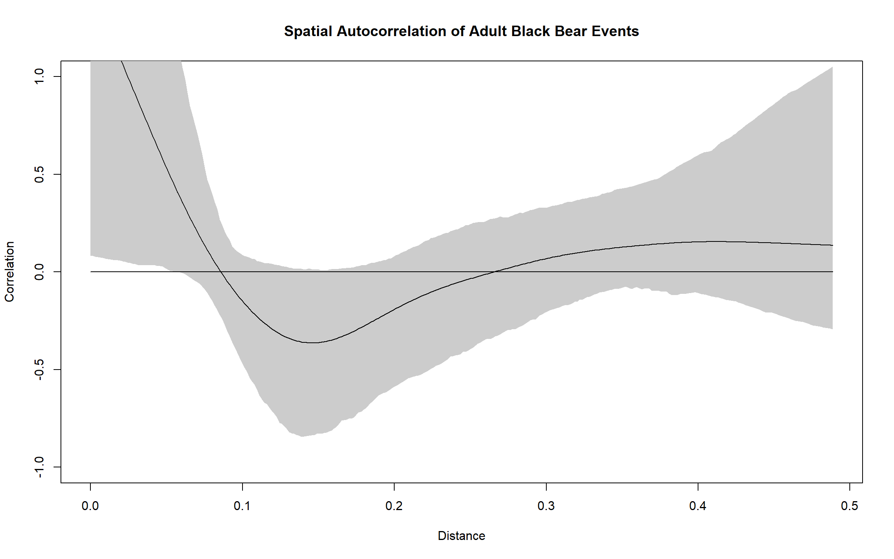

3 - Conduct Data Exploration
Before creating my first models I followed the data exploration protocol found in (Zuur, Ieno, and Elphick 2010).
(Zuur, Ieno, and Elphick 2010) Protocol
The 8 steps from the (Zuur, Ieno, and Elphick 2010) data exploration protocol include checking for:
- Outliers in the response and explanatory variables
- Homogeneity in the response variable
- Normality in the response
- Zero trouble in the response
- Collinearity in the response
- Relationships in the response and explanatory variables
- Interactions
- Independence in the response variable
Note that some of these steps are not designed for use with categorcial variables.
Preparing the Data
library(ggplot2)
library(ggpubr)
library(lattice)
library(gridExtra)
library(ape)
library(tidyr)
library(tidyverse)
library(dplyr)
library(knitr)
library(ncf)
# Reading in the adult black bear data and the camera locality data
Bear<-read.csv("./Data/7_BlackAdultClean.csv",header=TRUE,stringsAsFactors = FALSE)
Locations<-read.csv("./Data/ParksCanadaCameraLocations.csv",header=TRUE,stringsAsFactors = FALSE)
# Setting Season as a factor and ordering it for future plots, this will allow for plots to be ordered in spring, summer, autumn
Bear$Season<-as.factor(Bear$Season)
Bear$Status<-as.factor(Bear$Status)
Bear$Region<-as.factor(Bear$Region)
Bear$Season <- ordered(Bear$Season, levels = c("Spring", "Summer", "Autumn"))
# Separating pre-fire and post-fire data into separate data frames
Pre<-Bear[which(Bear$Status == "Prefire"),]
Post<-Bear[which(Bear$Status == "Postfire"),]Here is a quick look at the structure of the Bear data frame
str(Bear)## 'data.frame': 5226 obs. of 10 variables:
## $ Camera_Code : chr "H10" "H10" "H10" "H10" ...
## $ Ordered_Week : int 217 218 219 220 221 222 223 224 225 226 ...
## $ Species : chr "black" "black" "black" "black" ...
## $ Region : Factor w/ 2 levels "Burnt","Unburnt": 1 1 1 1 1 1 1 1 1 1 ...
## $ Lone_Adult : int 0 0 0 0 0 0 0 1 0 0 ...
## $ Effort_per_week : int 1 7 7 7 7 7 7 7 7 7 ...
## $ Season : Ord.factor w/ 3 levels "Spring"<"Summer"<..: 1 1 1 1 1 1 1 1 1 1 ...
## $ Status : Factor w/ 2 levels "Postfire","Prefire": 2 2 2 2 2 2 2 2 2 2 ...
## $ Group_Size : num 1.82 2.62 2.67 1.33 2.75 ...
## $ Number_of_Groups: int 11 16 6 6 12 4 10 4 0 2 ...head(Bear)## Camera_Code Ordered_Week Species Region Lone_Adult Effort_per_week Season
## 1 H10 217 black Burnt 0 1 Spring
## 2 H10 218 black Burnt 0 7 Spring
## 3 H10 219 black Burnt 0 7 Spring
## 4 H10 220 black Burnt 0 7 Spring
## 5 H10 221 black Burnt 0 7 Spring
## 6 H10 222 black Burnt 0 7 Spring
## Status Group_Size Number_of_Groups
## 1 Prefire 1.818182 11
## 2 Prefire 2.625000 16
## 3 Prefire 2.666667 6
## 4 Prefire 1.333333 6
## 5 Prefire 2.750000 12
## 6 Prefire 2.500000 4A - Outliers in the response and explanatory variables
To assess for outliers I plotted both the number of weekly bear events (continuous predictor) and the number of weekly human groups (response variable) as box and whisker plots and Cleveland dot plots.
# Box plot of the response variable (Number of adult black bears per week)
boxplot(Bear$Lone_Adult, ylab = "Number of events per week per camera", main = "Weekly Number of Lone Adult Black Bear Events per Camera")# Boxplot of continuous variable (Number of human groups)
boxplot(Bear$Number_of_Groups, ylab = "Number of groups per week per camera", main = "Weekly Number of Human Events per Camera")ggplot(Bear, aes(Lone_Adult,Camera_Code)) +
geom_point(aes(color = Season),
size = 2,
position=position_dodge(width = 0.5)) +
labs(title = "Cleveland Dotplot of Weekly Lone Adult Black Bear Events per Camera", x = "Number of Bear Events", y = "Camera Code")ggplot(Bear, aes(Number_of_Groups,Camera_Code)) +
geom_point(aes(color = Season),
size = 2,
position=position_dodge(width = 0.5))+
labs(title = "Cleveland Dotplot of Weekly Human Events per Camera", x = "Number of Human Events", y = "Camera Code")B - Homogeneity in the response variable
In order to assess for violations in the assumption of homogeneity in the response variable I conducted conditional boxplots. Boxplots show the response variable plotted per factor level in each categorical predictor.
# Response variable plotted by seasons
Homogeneity1<-bwplot(Lone_Adult ~ Season | Region * Status, data = Bear)
Homogeneity2<-bwplot(Lone_Adult ~ Season | Region, data = Bear)
Homogeneity3<-bwplot(Lone_Adult ~ Season | Status, data = Bear)
Homogeneity4<-bwplot(Lone_Adult ~ Status | Region, data = Bear)
grid.arrange(Homogeneity1,Homogeneity2,Homogeneity3,Homogeneity4)Interpretation and Action
It appears that the summer season and the burnt post-fire region may show violations of homogeneity. These appear to be rather small in nature and zuur et al, recommends checking for violation in homogeneity in the model residuals. No action will be taken at this time, however, we will look into this again with model residuals.
C - Normality in the response
As we are working with count data we expect for a Poisson or negative binomial response variable distribution. In order to evaluate the distribution of the response variable I will plot a histogram of response variable frequency.
# Plotting the weekly black bear event frequency into a histogram
hist(Bear$Lone_Adult,breaks=seq(-1,16,1), label = TRUE, main = "Frequency Plot of Weekly Lone Black Bear Events", xlab = "Number of Lone Adult Black Bear Events per Week")D - Zero Trouble Y
In order to assess whether there is zero-inflation in the response variable I will plot a histogram of the event frequency. (Same plot as above)
# Plotting the weekly black bear event frequency into a histogram
hist(Bear$Lone_Adult,breaks=seq(-1,16,1), label = TRUE, main = "Frequency Plot of Weekly Lone Black Bear Events", xlab = "Number of Lone Adult Black Bear Events per Week")
E - Collinearity in the response
Due to my model only containing one continuous predictor I did not test for collinearity in predictors.
F - Relationships in the response and explanatory variables
In order to evaluate if there are any relationships between predictors and the response variable I plotted all predictos against the response variable. With most of my predictors being categorical these plots will be more informative in finding outliers than relationships between predictors and response. It is suggested that in order to explore the relationships we should use multi-panel scatter plots and conditional boxplots.
Relation1<-ggplot(data = Bear, aes(x = Status, y = Lone_Adult)) +
geom_boxplot()
Relation2<-ggplot(data = Bear, aes(x = Region, y = Lone_Adult)) +
geom_boxplot()
Relation3<-ggplot(data = Bear, aes(x = Season, y = Lone_Adult)) +
geom_boxplot()
Relation4<-ggplot(data = Bear, aes(x = Number_of_Groups, y = Lone_Adult)) +
geom_point() +
geom_smooth(method='lm')
ggarrange(Relation1,Relation2,Relation3,Relation4)## `geom_smooth()` using formula 'y ~ x'Interpretation and Action
These plots do not suggest any observable issues when plotting residuals against the predictors. The positive relationship between the number of bear events and the number of human groups is unexpected and should be explored further. There appears to be no observable outliers in the categorical predictors. Overall, there are not any alarming trends or points in the plots above.
G - Interactions
In order to evaluate the possiblity of interacting effects between predictors I created coplots and conditional boxplots (boxplots for categorical predictors only).
coplot(Lone_Adult~Number_of_Groups|Season * Region,data = Bear,
xlab = "Number_of_Groups",
panel = function(x, y, ...) {
tmp <- lm(y ~ x, na.action = na.omit)
abline(lm(y ~ x), col = "blue")
points(x, y) })coplot(Lone_Adult~Number_of_Groups|Season * Status,data = Bear,
xlab = "Number_of_Groups",
panel = function(x, y, ...) {
tmp <- lm(y ~ x, na.action = na.omit)
abline(lm(y ~ x), col = "blue")
points(x, y) })
coplot(Lone_Adult~Number_of_Groups|Region * Status,data = Bear,
xlab = "Number_of_Groups",
panel = function(x, y, ...) {
tmp <- lm(y ~ x, na.action = na.omit)
abline(lm(y ~ x), col = "blue")
points(x, y) })
Interaction4<-ggplot(data = Bear, aes(x = Status, y = Lone_Adult)) +
geom_boxplot() +
geom_smooth(method="lm",aes(group=1))
Interaction4 + facet_grid(Season ~ Region)## `geom_smooth()` using formula 'y ~ x'Interpretation and Action
It appears that there are some interactions to keep in mind. It seems that there is a noticeable interaction of season with all other variables being considered. There may also be an interaction of region and time-period but it is difficult to interpret in the graphs due to the large amount of zeros. Overall, there does not appear to be any issues in the data in regards to interactions, during model fit these interactions will be explored further.
H - Independence in the response variable
In order to check for spatial autocorrelation in the raw data I plotted a spline correlogram using distance data and the response variable.
# Spatial Autocorrelation using ncf
colnames(Locations)[which(names(Locations) == "Name")] <- "Camera_Code"
M<-merge(Bear,Locations[,c("Camera_Code","Latitude","Longitude")], by = "Camera_Code")
Agged<-aggregate(Lone_Adult~Camera_Code+Longitude+Latitude, data = M, sum)
SpatialAutocorrelation <- spline.correlog(Agged$Longitude,Agged$Latitude,Agged$Lone_Adult)
Interpretation and Action
There appears to be an effect of spatial autocorrelation in the raw data, although it doesn’t appear to be severe in nature. Despite this evidence of spatial autocorrelation in the raw data I believe that my final model will address this issue and I will further test the effect of spatial autocorrelation in the residuals of my model.